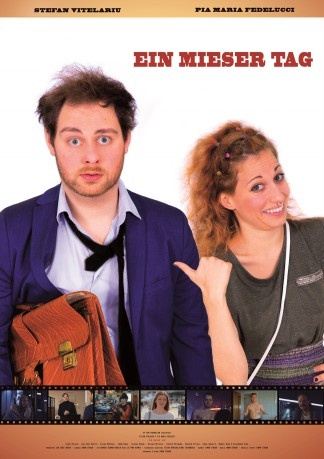

#9600 Ein Mieser Tag
 
 IMDB-Wertung: 0.0 / 10
IMDB-Wertung: 0.0 / 10  Metascore: 0
Metascore: 0 
Als Freddy heute Morgen aufwacht, scheint der Tag nicht so zu verlaufen, wie er es sich vorgestellt hat. Seine Freundin betrügt ihn, sein Auto bricht zusammen und sein Chef droht, ihn zu feuern. Um seinen Job zu retten, begibt er sich auf eine wilde Tour durch die Stadt mit dem leicht verrückten und unberechenbaren Charlie.
Jahr: 2018
Dauer: 86 Minuten
FSK: 12
Land: Deutschland Studio: KV-Film ProductionTonspuren:
Untertitel:
Auflösung: 1080p (1920x800) Größe: 3870 MB
Genre: Komödie
Regisseur: Simon Straub
Drehbuch: Simon Straub
Soundtrack:
Darsteller:
- Ivana Andjelic als Arms Dealer
- Stefan Dörschel als Nico
- Pia Maria Fedelucci als Charlie
- Torsten Hoffmann als Undertaker
- Simon Kubat als Paul
- Jan Josef Kudlyk als Ronny
- Claudia Mahon als Female Killer
- Tatjana Milicevic als Lolita
- Femi Morina als Markus
- Manuel Nero als Dirk
- Laura Pletzer als Hannah
- Aleksandra Simic als Employee at bakery
- Karsten Spitzer als Mr. Dickbreder
- Stefan Vitelariu als Freddy
Datei: X:\2018(G-M)\Mieser Tag, Ein (2018, FSK12, 1920x800).mkv seit 18.09.2018
Festplatte: HD 2018(G-Z)-2019(A-Z)
 Es gibt insgesamt 138 Filme in der Gruppe '2018(G-M)'
Es gibt insgesamt 138 Filme in der Gruppe '2018(G-M)'